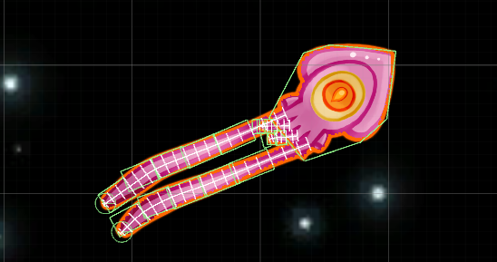
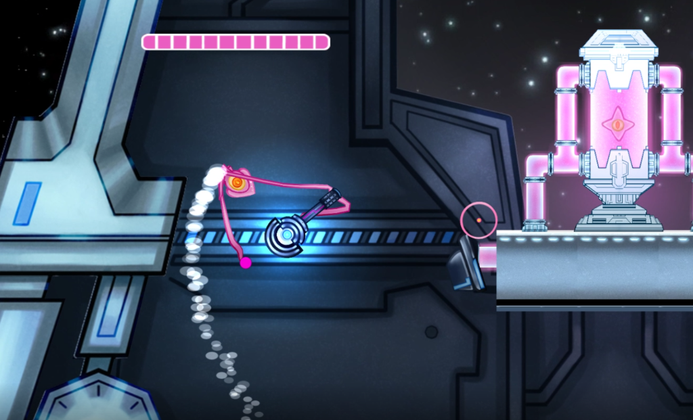

During the week of October 22nd 2017, I was focused on refining movement and fixing the tentacles. Over the past few weeks, we’ve realized the first implementation of the tentacles was very temporary with them stretching and deforming the mesh a ton. This distracted the players, negating the utility they provide. Another thing is that players tend to have a ton of issues with movement in the game. We decided to try a new approach as suggested by my capstone professor.
I spoke with Professor Dan about how I could remake the tentacle system to where I have full control of how they look/feel when in action. I also wanted them to be very tweakable so that a designer could tweak them into perfection. He responded with a very clever solution and I will explain how I implemented it in the next few paragraphs.
First, I needed to implement my own spring joints since the base system didn’t cut it. Mine would still act with Unity’s physics; however, I could make them bidirectional so the forces would be combined. I used Hooke’s law to implement these. I found they only retained the springiness when using Rigidbody.AddForce rather than Rigidbody.MovePosition. Next, I needed to create a catmull rom spline through the joints. I would then need to sample on the spline based on the number of edge vertices that are on each side. From these positions, I could find the line perpendicular to that sample point, and add it to a vector of new triangle positions. The resulting list of positions is the new vertex positions. This will eventually be moved into a shader, but the current result is a mesh that is fully and accurately skinned with custom spring joints.
 The long line going through the tentacles represents the catmull rom spline. The small lines represent the samples on the spline and where the vertices were moved. The green boxes represent the colliders on the tentacles.The hardest part was getting it to feel good and implementing the mechanics. I originally put everything together and spent hours trying to brute-force it. My professor Dan suggested I work with as little as possible and slowly build up instead. So, I started with just the joints and the springs without the body. Once I had that down, I was able to add the body in and get the physics working nicely for that. When I worked with so few parts, I was able to get the numbers I wanted for everything much faster. Eventually I got it to a point where I was happy and implemented the tentacle collision along with the other mechanics. Now the squid has 4 tentacles happily following it.
The next big task I worked on was having the player rotate to face the mouse and thrust towards it rather. I started by just plainly having it rotate, yet this caused many bugs including the tentacles getting torn out of the body. To prevent this, I needed to rotate it using only physics. To do this, I have a script calculates the target rotation to face the mouse every frame. It only calculates a rotation that is slightly towards this new rotation. It then gets the angle between this new rotation and the current rotation. The resulting angle is passed into the Rigidbody.AddTorque to which it is rotated over time using physics. The bug went away after this. Thankfully, the player thrusting towards the mouse was much easier to implement than the tentacles.
 Buttery smooth tentacles!Thanks for reading! Connect with us on Twitter, Facebook, or YouTube. To make sure you stay up to date, sign up for our email list!